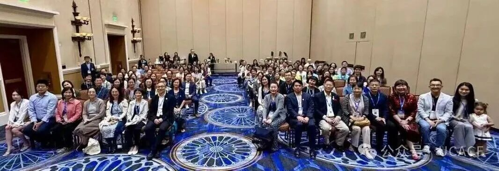
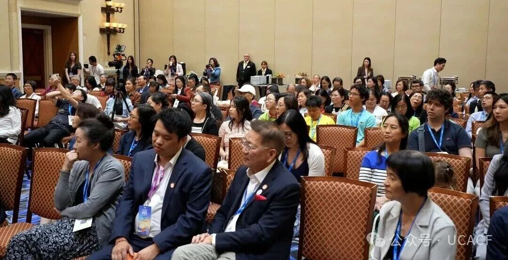
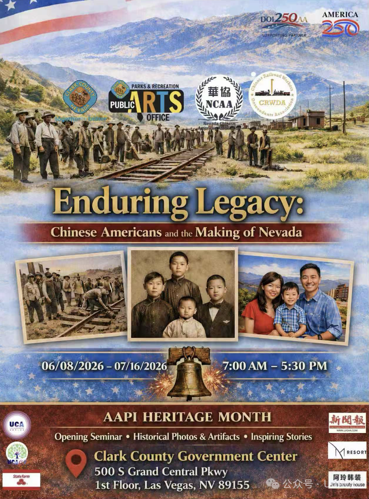
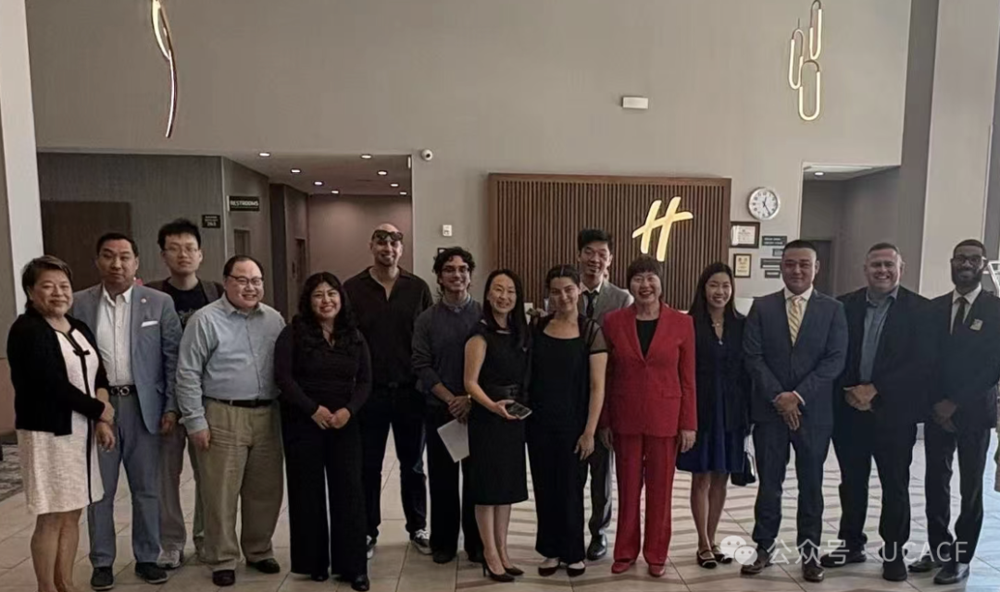
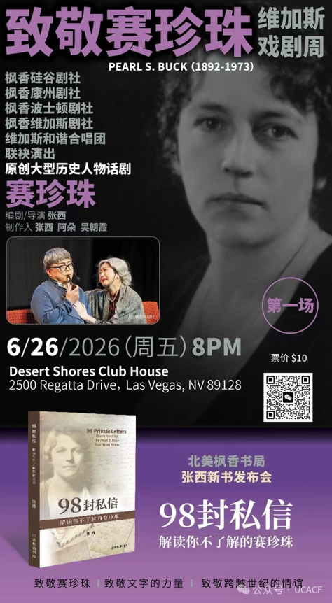
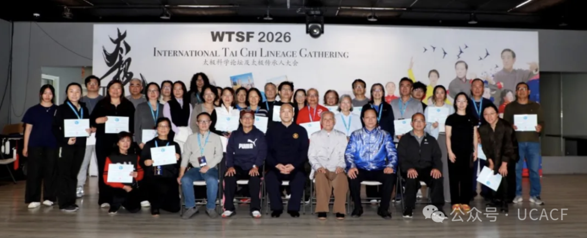

🌟 重要活动 | Featured Highlight
6月29日：UCACF Impact Reception 在拉斯维加斯成功举行 UCACF Impact Reception Held in Las Vegas on June 29
2026年6月29日，在第五届美国华人大会举办期间，UCA Community Foundation (UCACF)
影响力招待会于拉斯维加斯凯撒宫温馨举行。招待会汇聚了UCACF的捐赠人、资助项目受益人及社区领袖，大家借着大会齐聚一堂的契机，共同回顾这一年来的公益足迹，也一同展望基金会未来的发展方向。
正如UCACF Executive Committee Chair Sharon
Chang在邀请函中所写："我们最大的力量来自像您这样的合作伙伴——与我们共同致力于赋能华裔美国社区的引领者。"
这场招待会，正是这样一次意义深远的重聚——它既是对过去一年共同成就的庆祝，也是一次凝聚共识、展望未来的机会。招待会期间分享了UCACF资助项目的最新进展，介绍了来自受资助项目的动人故事，也向在场嘉宾勾勒出基金会未来的战略重点。
招待会气氛轻松而不失专业。多位UCACF董事会成员及嘉宾相继登台致辞，包括但不限于董事会主席常劲（Gene Chang）、执行委员会主席Sharon
Chang、副主席葛倩（Qian Ge）、财务主管刘瑞华（Dr. Louise Ruihua Liu），以及UCA理事长王华(Hua
Wang)。各位理事从各自的角色与视角出发，分享了对UCACF发展现状与未来方向的思考，让在场的捐赠人与受助伙伴们更加清晰地看到了UCACF这一路走来的用心，也让大家对基金会接下来的战略布局有了更深的期待。
来自全美各地、不同背景的捐赠人与受助代表借此机会深入交流，彼此分享各自社区项目的经验与心得，也与理事会成员进行了更近距离的互动——这正是招待会最珍贵的部分：让每一位支持者都能亲身感受到自己的付出为社区带来的真实影响。
这场温暖而充实的招待会，不仅让与会者更深入地了解了UCACF的资助理念与运作方式，也让基金会与社区伙伴之间的连接更加紧密。正如招待会的初衷所愿
— 一个项目、一个连接、一个社区，携手同行，持续向前。

On June 29, 2026, during the Fifth United Chinese Americans Convention, the UCA Community
Foundation (UCACF) hosted its Impact Reception at Caesars Palace in Las Vegas. The event brought
together donors, grant recipients, board members, and community leaders to reflect on the
Foundation's achievements and discuss its future direction.
As UCACF Executive Committee Chair Sharon Chang noted, the Foundation's strength comes from partners
who share its commitment to empowering Chinese American communities. Guests heard updates and
stories from UCACF-funded projects, as well as remarks from Board Chair Gene Chang, Sharon Chang,
Vice Chair Qian Ge, Treasurer Dr. Louise Ruihua Liu, and UCA Chairman Hua Wang.
The reception also provided an opportunity for donors and grant recipients from across the country
to exchange experiences and connect with UCACF leaders. The gathering strengthened relationships
across the community and highlighted the meaningful impact of UCACF's work — Giving back to our
community to create a better world for ourselves and our children!

❄️ 社区亮点 | Community Spotlight
6月8日–7月16日："持久的历史遗产：华人对美国及内华达州的贡献"展览 Enduring Legacy: Chinese Americans and the Making of Nevada
为纪念美国建国250周年和华人抵达内华达176周年，内华达华人协会与铁路华工后裔协会合作，于6月8日至7月16日在拉斯维加斯克拉克县政府中心成功举办"持久的历史遗产：华人对美国及内华达州的贡献"展览。
展览系统回顾了华人在美国及内华达州发展历程中的重要贡献，弘扬了内华达州多元文化传统，并吸引了社区居民、学校师生及对历史文化感兴趣的各界人士前来参观。
这一项目不仅是一场历史展览，也是America250纪念背景下对华人社区贡献的一次重要公共呈现。展览让更多公众认识到华人在铁路建设、社区发展、经济建设与文化传承中的重要角色，也帮助主流社会更加全面地理解华裔美国人的历史与贡献。
Enduring Legacy: Chinese Americans and the Making of Nevada
In celebration of America's 250th anniversary and the 176th anniversary of the arrival of Chinese
people in Nevada, the Nevada Chinese Association and the Railroad Chinese Descendants Association
successfully co-hosted "Enduring Legacy: Chinese Americans and the Making of Nevada" from June 8 to
July 16 at the Clark County Government Center in Las Vegas.
The exhibition highlighted the important contributions of Chinese Americans to the development of
both the United States and the State of Nevada while celebrating Nevada's multicultural heritage. It
welcomed community members, students, educators, and visitors interested in history and culture.
More than a historical exhibition, the project brought Chinese American stories into public view as
part of the America250 commemoration. It helped visitors better understand the role Chinese
Americans have played in railroad construction, community building, economic development, and
cultural preservation.

❄️ 社区服务亮点 | Community Service Spotlight
加州亚裔律师协会举办社区免费法律咨询日 California Asian American Attorneys Association Hosts Free Community Legal Clinic
5月30日，加州亚裔律师协会与蒙特利公园市商会在蒙特利公园市Holiday
Inn联合举办社区免费法律咨询日，为当地居民提供公益法律咨询服务。活动吸引了多位律师积极参与，为社区居民提供了面对面交流与初步法律咨询的机会。
本次活动重点回应了居民在日常生活中经常遇到、但可能因律师费用较高而难以及时解决的法律问题。参与律师就移民法、房地产法、人身伤害和民事诉讼等领域，为居民提供了初步建议和基本指引。
此次免费法律咨询日体现了加州亚裔律师协会推动法律资源普惠化的长期承诺。通过将专业法律服务带入社区，活动有效提升了居民的法律意识，也鼓励更多法律专业人士积极参与亚裔社区及广大民众的公益服务。
California Asian American Attorneys Association Hosts Free Community Legal Clinic
On May 30, the California Asian American Attorneys Association, together with the Monterey Park
Chamber of Commerce, successfully hosted a free community legal clinic at the Holiday Inn in
Monterey Park.
The event helped residents address common legal concerns that can be difficult to resolve because of
the high cost of professional legal services. Volunteer attorneys provided preliminary guidance on
immigration, real estate, personal injury, civil litigation, and other legal matters.
The clinic demonstrated a strong commitment to making legal resources more accessible. By bringing
attorneys directly into the community, the program helped residents obtain basic legal guidance and
encouraged legal professionals to become more actively involved in serving Asian American and
broader local communities.

❄️ 社区文化亮点 | Community Culture Spotlight
Herstory 展览持续走进图书馆、学校与社区空间 Herstory Exhibitions Continue to Reach Libraries, Schools, and Community Spaces
6月，Herstory及相关主题展览继续在多个城市和机构成功展出，地点包括San Jose Library Almaden Branch、Clifton
Park–Halfmoon Library、Chinese Community Center in Albany、AAPI History Museum in
Providence，以及California State University, Northridge等。
Herstory项目由Dr.
Chang C. Chen推动，通过法律、历史、艺术与公共教育相结合的方式，呈现华裔女性在美国法律和社会发展中的经历与贡献。各地展览通常展出约12幅主题海报，介绍2020年至2025年间与华裔女性相关的重要法律案例、社会议题及历史发展。
系列展览将原本容易被忽视的华裔女性法律史带入图书馆、学校、博物馆和社区中心，让更多公众得以认识、理解并讨论这段重要历史。从移民、身份认同和女性权益，到公共记忆与历史书写，Herstory项目让华裔美国史从书本走入社区，成为公众可以亲身接触和共同讨论的故事。
Herstory Exhibitions Continue to Reach Libraries, Schools, and Community Spaces
In June, Herstory and related exhibitions continued to be successfully presented at libraries,
schools, museums, and community spaces across the country. Participating locations included the San
Jose Library Almaden Branch, Clifton Park–Halfmoon Library, the Chinese Community Center in Albany,
the AAPI History Museum in Providence, and California State University, Northridge.
Led by Dr. Chang C. Chen, the Herstory project combines law, history, art, and public education to
highlight the experiences and contributions of Chinese American women. Each exhibition generally
featured approximately 12 posters covering major legal cases, social issues, and historical
developments involving Chinese American women between 2020 and 2025.
By bringing these stories into public spaces, Herstory made an often-overlooked part of Chinese
American legal history more visible and accessible. Through themes including immigration, identity,
women's rights, and public memory, the project transformed Chinese American history into something
communities could see, experience, and discuss together.
❄️ 出版与文化交流 | Publication and Cultural Exchange
新书发布：《98封私信——解读你不了解的赛珍珠》 Book Launch: 98 Letters — Understanding Pearl S. Buck Through Private Correspondence
6月26日，在话剧《赛珍珠》首演期间，新书《98封私信——解读你不了解的赛珍珠》发布会在拉斯维加斯成功举行。该书从私人书信、文学与历史等角度出发，帮助读者重新认识赛珍珠，并进一步理解她与中美文化交流之间的深厚联系。
此次活动不仅是一场新书发布会，也是一场融合文学、戏剧、历史和跨文化交流的社区文化活动。通过书籍与舞台剧的结合，项目为公众提供了一个重新认识赛珍珠、回顾中美文化交流历史的重要机会。
Book Launch: 98 Letters — Understanding Pearl S. Buck Through Private Correspondence
On June 26, the book launch for 98 Letters: Understanding Pearl S. Buck Through Private
Correspondence was successfully held in Las Vegas in conjunction with the premiere of the play Pearl
S. Buck.
Drawing from private correspondence, literature, and historical materials, the book offered readers
a deeper understanding of Pearl S. Buck and her connection to cultural exchange between China and
the United States.
More than a book launch, the event brought together literature, theater, history, and community
education. By combining the publication with a stage performance, the program provided the public
with a meaningful opportunity to rediscover Pearl S. Buck and better understand the history of
cross-cultural exchange between China and the United States.

❄️ 项目更新 | Project Update
2026 International Tai Chi Science & Cultural Exchange Series 圆满结束 2026 International Tai Chi Science & Cultural Exchange Series Successfully Concludes
2026 International Tai Chi Science & Cultural Exchange
Series于5月圆满结束。该系列活动历时22天，先后走进洛杉矶、硅谷、旧金山湾区、波士顿、纽约、华盛顿特区及迈阿密等地，并在斯坦福大学、哈佛医学院和United
Nations总部等知名机构及场地开展交流活动。
系列活动包括国际会议、太极传承交流、领导力论坛、文化交流项目和国际示范展示，促进了太极、气功、身心健康、慢性病康复、心理健康及跨文化医学教育等领域的讨论与合作。
其中，在斯坦福大学Faculty Club举办的"International Conference on Tai Chi and Integrative
Medicine"成为系列活动的重要亮点。会议汇聚了来自中美高校与研究机构的学者和专家，围绕太极在整合医学、神经科学、运动医学、老龄化与长寿研究、心理健康及慢性病干预等领域的应用进行了深入交流。

The 2026 International Tai Chi Science & Cultural Exchange Series successfully concluded in May
after a 22-day journey across major regions of the United States, including Los Angeles, Silicon
Valley, the San Francisco Bay Area, Boston, New York, Washington, D.C., and Miami. Programs were
held at internationally recognized institutions and venues, including Stanford University, Harvard
Medical School, and United Nations Headquarters.
The series included international conferences, Tai Chi lineage gatherings, leadership forums,
cultural exchange programs, and international demonstrations. These activities promoted dialogue and
collaboration in Tai Chi, Qigong, whole-person health, chronic disease rehabilitation, mental health,
and cross-cultural medical education.
One of the major highlights was the International Conference on Tai Chi and Integrative Medicine at
the Stanford University Faculty Club. The conference brought together scholars and experts from
universities and research institutions in China and the United States to discuss the applications of
Tai Chi in integrative medicine, neuroscience, sports medicine, aging and longevity research, mental
health, and chronic disease intervention.